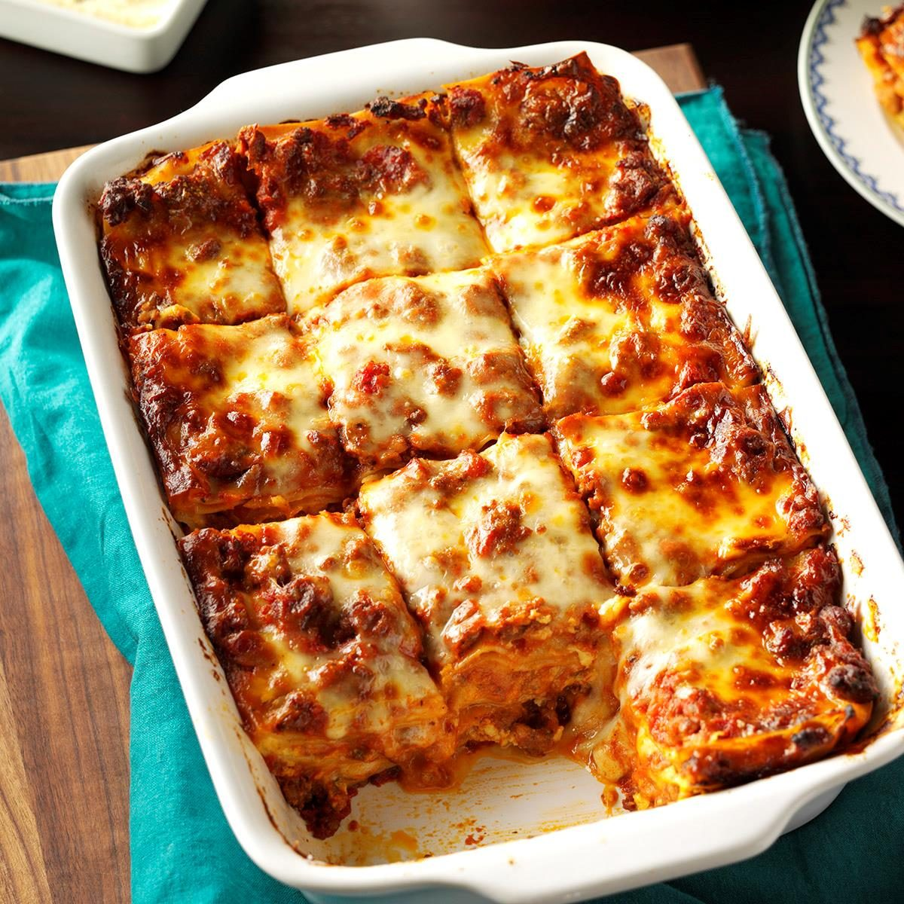

Mom's Homemade Lasagna

Below is not the original Lepage lasagna, since
unfortunately Mme. Lepage was unavailable. So,
until this page is updated, this is my approximation
of her timeless recipe.
Ingredients
- 1/2lb Dry Lasagna Noodles
- 1lb Ground Beef
- 2lb Sliced Mozarella
- 1 Medium Onion, Diced
- 2 Garlic Cloves, Minced
- 28oz Prego Tomato Sauce
- 2tsp Dried Oregano
- 1tbsp Italian Seasoning
- 2tsp Garlic Powder
- Salt to taste
Steps
- In a large skillet, add ground beef and cook on medium-high heat until it is browned. Drain excess fat.
- Add onion, garlic, and 1tbsp of butter to the skillet, and cook until onions are translucent. Add the beef back into the skillet, and stir.
- Transfer the skillet mixture into a large pot. Add the tomato sauce and spices to the pot.
- Bring the sauce to a simmer and then lower heat. Cook for 20-30 minutes, stirring often.
- While the sauce is cooking, add lasagna noodles to salted, boiling water and cook them to al dente. stir often to prevent sticking.
- Drain noodles into a colander and rinse with cold water, separating any noodles that are stuck together.
- Preheat the oven to 375F, and begin assembling the lasagna.
- Begin with a layer of lasagna noodles, then alternate between sauce and noodle layers.
- Finish with the grated mozarella on top, and place in the oven for 45 minutes.